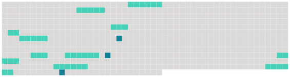

Longueur nb maillons : 13 mentions |
|
« Résistance à la Mac Domination », tel sera le mot d'ordre des Verts du Territoire face à l'arrivée [du premier Mac Donald's du département] Histoire de marquer le coup et de ne pas souhaiter la bienvenue à Mac Do, les Verts organiseront demain à 19 h une distribution de pain bio et de comté devant la parcelle [du fast food d'Andelnans] [8 phrases]
Cinq cents commandes par jour [1 phrases] « [Ce restaurant] doit garder un flux rapide de clientèle, mais nous ne voulons pas mépriser les personnes qui viennent nous voir » explique Philippe Fayard, le « Monsieur Mac Do » de l'Aire urbaine, qui dispose déjà des restaurants de Montbéliard, d'Audincourt et aujourd'hui d'Andelnans [. Ce fast food nouveau] aura en tout coûté la somme de quatre millions de francs.
[Il] devrait être rapidement amorti avec une moyenne espérée de cinq cents commandes par jour. [2 phrases]
Rien ne dit que nous ne nous installerons pas dans quelques temps au cœur de Belfort » [Le restaurant très attendu d'Andelnans] ouvre [ses] portes ce matin à 7 h 30 pour ne fermer qu'à minuit. [1 phrases] [Ce 748ème Mac Donald's français] est observé d'un œil tout particulier par les « big brothers » de la direction parisienne. [1 phrases]
C'est que [le restaurant flambant neuf du rond-point] est un petit nouveau dans la famille Mac Do. [1 phrases]
[Ce Mac Do du troisième millénaire] n'a plus grand chose à voir avec [ses] ancêtres cliniques des années quatre-vingts conçus pour que le client y reste le moins longtemps possible. |
 |
Il est possible de télécharger la ressource sur la page Ortolang |
Si vous avez des questions ou vous voyez des erreurs, merci d'envoyer un mail à silvia.federzoni89@gmail.com |